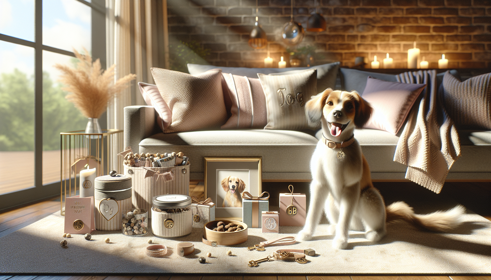

Finding the perfect present for a dog lover does not have to mean overspending. In fact, some of the most meaningful gifts are the ones that feel personal, useful, and full of heart. If you are shopping for a birthday, holiday, adoption anniversary, or just because, personalized dog gifts under $50 can strike that perfect balance between thoughtful and affordable.
For pet owners, gifts that celebrate their dog are almost always a win. A custom item with a pup's name, photo, or unique personality built into the design instantly feels more special than something generic. It says, “I know how much your dog means to you,” and that kind of attention makes a gift memorable.
In this guide, we are sharing some of the best personalized dog gifts under $50, along with tips on how to choose the right one. Whether you are buying for a devoted dog mom, a proud dog dad, a new puppy owner, or even treating yourself, these ideas are charming, practical, and budget-friendly.
There is something undeniably sweet about a gift made just for one specific dog. Personalized pet products feel intimate, creative, and often more emotionally meaningful than off-the-shelf options. They can celebrate a dog's name, breed, quirks, or the special bond they share with their human.
Another reason personalized gifts work so well is that they are versatile. Some are decorative, like custom portraits or keepsake prints. Others are practical, like bowls, bandanas, tags, and storage jars. That means you can choose something based on the recipient's style and needs while still adding a custom touch.
Best of all, there are plenty of affordable personalized dog gifts available today. You do not need a luxury budget to give something unique. With a little browsing, you can find beautiful custom pet gifts under $50 that look polished, thoughtful, and one-of-a-kind.
Personalized dog bandanas are one of the most popular gifts for a reason. They are adorable, easy to use, and perfect for dogs with big personalities. A custom bandana can feature the dog's name, a playful phrase, seasonal designs, or even colors that match the pet owner's aesthetic.
This kind of gift is especially great for social media-loving pet parents who enjoy sharing photos of their dog. A personalized bandana can make everyday walks, special occasions, and holiday snapshots feel extra fun. It is also one of the easiest custom gifts to keep under budget, making it ideal for shoppers looking for affordable personalized dog gifts.
If you want something cute, useful, and instantly giftable, a custom dog bandana is a fantastic choice.
A personalized dog bowl is a thoughtful gift that combines form and function. Since dogs use their bowls every single day, this gift becomes part of their routine while also adding a special touch to the home. You can often personalize bowls with the dog's name, a simple graphic, or a modern design that fits the owner's decor.
These make especially good gifts for new puppy parents, recent adopters, or anyone upgrading their pet essentials. Instead of a plain feeding setup, a custom bowl turns mealtime into something a little more charming and intentional.
When shopping for personalized dog bowls under $50, look for durable materials, easy-to-clean finishes, and designs that match the recipient's style. Some owners love minimalist neutral tones, while others prefer colorful, playful prints. Either way, this is a practical gift that still feels personal.
Engraved pet tags are one of the smartest personalized dog gifts because they serve a real purpose while still being stylish. A custom tag can include the dog's name, contact information, and sometimes a fun message or decorative shape. It is a small gift, but one that every dog owner can appreciate.
For gift shoppers on a tighter budget, this is one of the best low-cost personalized options available. Many engraved tags are well below the $50 mark, which means you can pair them with another item like a bandana or treat jar for a more complete gift set.
Personalized dog tags are ideal for:
Because they are compact, useful, and highly customizable, engraved tags are an easy win for nearly any dog lover.
If you want a gift that feels decorative and functional, a personalized dog treat jar is a lovely option. Pet owners always need a place to store treats, and a custom jar can make countertops, pantry shelves, or pet stations look more put together. Add the dog's name or a simple custom label, and it instantly becomes a charming home accessory.
This is a great gift for dog lovers who enjoy home decor and appreciate items that blend into their living space. A personalized treat jar can feel polished and elevated without being too expensive. Many handmade options are available under $50, especially from small makers who specialize in custom pet products.
It is also easy to pair with homemade treats, a favorite snack, or a small toy for an extra thoughtful presentation. If you are putting together a gift basket for a dog owner, a custom treat jar can be the centerpiece.
Walks are one of the best parts of dog ownership, so personalized leash accessories make wonderful gifts. Depending on the style, you may find custom leashes, leash holders, poop bag dispensers, or matching accessory sets that include the dog's name or a monogram.
These items are practical enough for everyday use, but the personalization makes them feel much more special. For active dog owners, this kind of gift shows that you have considered something they will actually use often. It is not just decorative. It fits into their daily life with their pup.
When choosing personalized walking accessories, think about the dog's size, the owner's style, and whether they prefer neutral, bold, or playful designs. A custom leash accessory set can feel surprisingly luxurious while still staying within a reasonable budget.
For a more sentimental gift, custom pet portraits are hard to beat. Whether it is a digital illustration, a small printed portrait, or a stylized artwork featuring the dog's face and name, this type of gift often becomes a treasured keepsake. It is especially meaningful for devoted pet parents who love displaying photos of their dog around the house.
The good news is that personalized pet art does not have to be expensive. Many small-format portraits and printable custom designs are available under $50, making them a surprisingly accessible option. These gifts feel highly personal because they capture the dog's unique expression, coloring, and personality.
Custom keepsakes are a wonderful fit for:
If you want your gift to feel heartfelt and unforgettable, a custom pet portrait is one of the best personalized dog gifts under $50.
With so many options available, it helps to think about the recipient before you buy. Start by asking yourself how they live with their dog. Are they practical and focused on everyday essentials? Are they sentimental and likely to love custom art? Do they enjoy dressing up their pup for photos and holidays? The best gift is one that fits naturally into their lifestyle.
Here are a few simple tips for choosing well:
It is also smart to shop from makers who understand pet lovers and create products with care. Handmade personalized pet gifts often feel more unique than mass-produced items, and they bring a little extra warmth to the gift-giving experience.
You do not need to spend a fortune to give a dog lover something memorable. The best personalized dog gifts under $50 prove that affordable presents can still be full of charm, personality, and heart. From custom bandanas and engraved tags to treat jars, bowls, walking accessories, and pet portraits, there are so many ways to celebrate a beloved pup without going over budget.
Personalized gifts stand out because they feel intentional. They turn everyday pet products into keepsakes, and they help dog owners feel seen in the things they love most. Whether you are shopping for a holiday, birthday, adoption celebration, or a just-because surprise, a custom dog gift is always a thoughtful choice.
If you are ready to find something unique, heartfelt, and affordable, shop personalized pet products at SnoutAndAbout on Etsy.